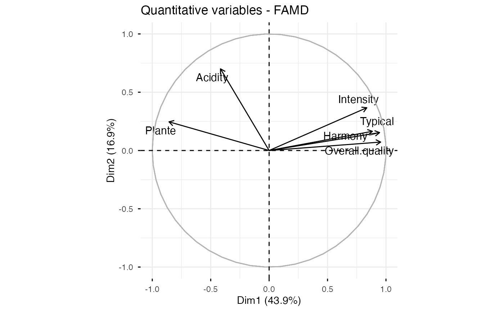
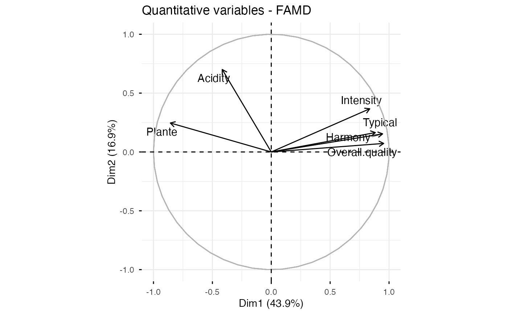

Factor analysis of mixed data (FAMD) is, a particular case of
MFA, used to analyze a data set containing both quantitative and
qualitative variables. fviz_famd() provides ggplot2-based elegant
visualization of FAMD outputs from the R function: FAMD [FactoMineR].
fviz_famd_ind(): Graph of individuals
fviz_famd_var(): Graph of variables
fviz_famd(): An alias of fviz_famd_ind(res.famd)
fviz_famd_ind(
X,
axes = c(1, 2),
geom = c("point", "text"),
repel = FALSE,
habillage = "none",
palette = NULL,
addEllipses = FALSE,
col.ind = "blue",
col.ind.sup = "darkblue",
alpha.ind = 1,
shape.ind = 19,
col.quali.var = "black",
select.ind = list(name = NULL, cos2 = NULL, contrib = NULL),
gradient.cols = NULL,
...
)
fviz_famd_var(
X,
choice = c("var", "quanti.var", "quali.var"),
axes = c(1, 2),
geom = c("point", "text"),
repel = FALSE,
col.var = "red",
alpha.var = 1,
shape.var = 17,
col.var.sup = "darkgreen",
select.var = list(name = NULL, cos2 = NULL, contrib = NULL),
...
)
fviz_famd(X, ...)Arguments
- X
an object of class FAMD [FactoMineR].
- axes
a numeric vector of length 2 specifying the dimensions to be plotted.
- geom
a text specifying the geometry to be used for the graph. Allowed values are the combination of
c("point", "arrow", "text"). Use"point"(to show only points);"text"to show only labels;c("point", "text")orc("arrow", "text")to show arrows and texts. Usingc("arrow", "text")is sensible only for the graph of variables.- repel
a boolean, whether to use ggrepel to avoid overplotting text labels or not. The old
jitterargument is kept for backward compatibility and is silently converted torepel = TRUE.- habillage
an optional factor variable for coloring the observations by groups. Default value is "none". If X is an MFA object from FactoMineR package, habillage can also specify the index of the factor variable in the data.
- palette
the color palette to be used for coloring or filling by groups. Allowed values include "grey" for grey color palettes; brewer palettes e.g. "RdBu", "Blues", ...; or custom color palette e.g. c("blue", "red"); and scientific journal palettes from ggsci R package, e.g.: "npg", "aaas", "lancet", "jco", "ucscgb", "uchicago", "simpsons" and "rickandmorty". Can be also a numeric vector of length(groups); in this case a basic color palette is created using the function palette.
- addEllipses
logical value. If TRUE, draws ellipses around the individuals when habillage != "none".
- col.ind, col.var
color for individuals and variables, respectively. Can be a continuous variable or a factor variable. Possible values include also : "cos2", "contrib", "coord", "x" or "y". In this case, the colors for individuals/variables are automatically controlled by their qualities ("cos2"), contributions ("contrib"), coordinates (x^2 + y^2 , "coord"), x values("x") or y values("y"). To use automatic coloring (by cos2, contrib, ....), make sure that habillage ="none".
- col.ind.sup
color for supplementary individuals
- alpha.ind, alpha.var
controls the transparency of individuals and variables, respectively. The value can variate from 0 (total transparency) to 1 (no transparency). Default value is 1. Possible values include also : "cos2", "contrib", "coord", "x" or "y". In this case, the transparency for individual/variable colors are automatically controlled by their qualities ("cos2"), contributions ("contrib"), coordinates (x^2 + y^2 , "coord"), x values("x") or y values("y"). To use this, make sure that habillage ="none".
- shape.ind, shape.var
point shapes of individuals, variables, groups and axes
- col.quali.var
color for qualitative variables in fviz_mfa_ind(). Default is "black".
- select.ind, select.var
a selection of individuals and variables to be drawn. Allowed values are NULL or a list containing the arguments name, cos2 or contrib:
name is a character vector containing individuals/variables to be drawn
cos2 if cos2 is in [0, 1], ex: 0.6, then individuals/variables with a cos2 > 0.6 are drawn. if cos2 > 1, ex: 5, then the top 5 individuals/variables with the highest cos2 are drawn.
contrib if contrib > 1, ex: 5, then the top 5 individuals/variables with the highest cos2 are drawn
- gradient.cols
vector of colors to use for n-colour gradient. Allowed values include brewer and ggsci color palettes.
- ...
Arguments to be passed to the function fviz()
- choice
The graph to plot inf fviz_mfa_var(). Allowed values include one of c("var", quanti.var", "quali.var").
- col.var.sup
color for supplementary variables.
Value
a ggplot
Examples
# Compute FAMD
library("FactoMineR")
data(wine)
res.famd <- FAMD(wine[,c(1,2, 16, 22, 29, 28, 30,31)], graph = FALSE)
# Eigenvalues/variances of dimensions
fviz_screeplot(res.famd)
 # Graph of variables
fviz_famd_var(res.famd)
# Graph of variables
fviz_famd_var(res.famd)
 # Quantitative variables
fviz_famd_var(res.famd, "quanti.var", repel = TRUE, col.var = "black")

# Qualitative variables
fviz_famd_var(res.famd, "quali.var", col.var = "black")
# Quantitative variables
fviz_famd_var(res.famd, "quanti.var", repel = TRUE, col.var = "black")

# Qualitative variables
fviz_famd_var(res.famd, "quali.var", col.var = "black")
 # Graph of individuals colored by cos2
fviz_famd_ind(res.famd, col.ind = "cos2",
gradient.cols = c("#00AFBB", "#E7B800", "#FC4E07"),
repel = TRUE)
# Graph of individuals colored by cos2
fviz_famd_ind(res.famd, col.ind = "cos2",
gradient.cols = c("#00AFBB", "#E7B800", "#FC4E07"),
repel = TRUE)